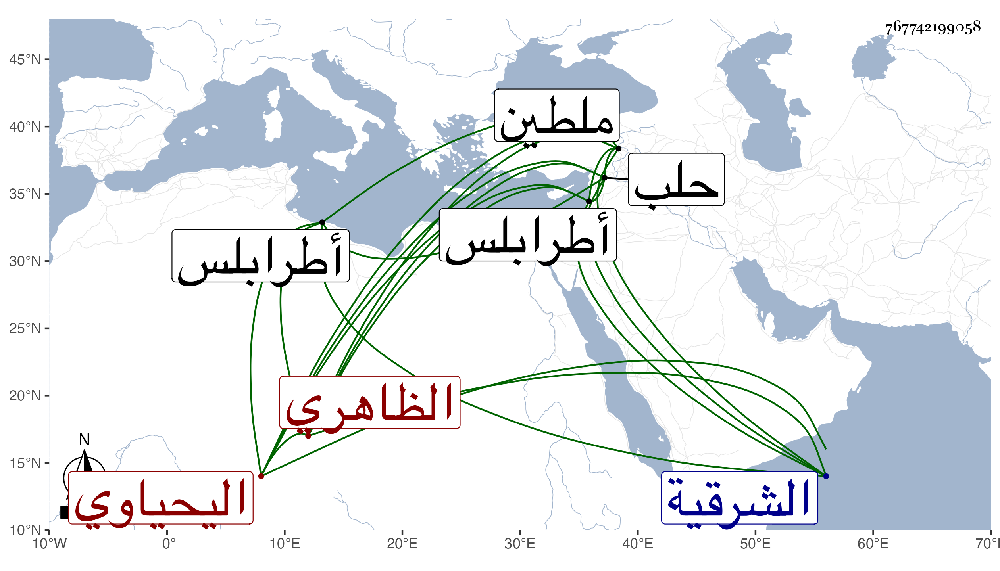

0902Sakhawi.DawLamic.ITO20230111-ara1.EIS1600.767742199058
Biography ID: 767742199058
1084
اينال اليحياوي الظاهري جقمق ويعرف بالأشقر ، تأمر في أيام الظاهر خشقدم وعمل الولاية وأخرج لنيابة ملطية ولا زال يتنقل حتى عمل نيابة طرابلس ثم حلب ثم في الأيام الأشرفية قايتباي عمل رأس نوبة النوب وقاسى الناس منه في أحكامه شدة وتجرد لسوار مدة بعد أخرى وعمل أمير سلاح وجرت له كائنة يقابل عليها شرحتها في محلها من الحوادث ، واستمر بعدها في جمود إلى أن سافر إلى الشرقية من أجل العرب فأقام أشهرا ثم ضعف فجيء به في محفة فبمجرد أن وصل وذلك في ليلة الجمعة خامس رمضان سنة تسع وسبعين مات غير مأسوف عليه فقد كنت أشهد في وجهه المقت وكان من سيآت الدهر رحم الله المسلمين .
